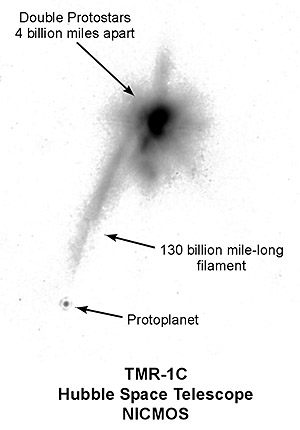

| Evolution in the News - June 1998 |
We really didn't want to talk about astronomy in this issue. We devoted all of last month's issue to the topic, and it should be time to let astronomy rest for a while. But the news made us do it.

In last month's issue, mailed on May 15, we said, "We believe there are planets around other stars, but none have been discovered yet." That was true then, but probably is not true now.
On May 28, the Associated Press released a story that said, "Astronomers using the Hubble Space telescope say they have, for the first time, directly seen and photographed a planet outside out solar system." The story was also reported in the June 5 issue of Science, the June 6 issue of Science News, and the June 8 issue of Newsweek. Since May 28 there has been a full press release on the web at http://oposite.stsci.edu/pubinfo/pr/1998/19/.
We hope it really is a planet because, if it is, we are sure it is bound to force astronomers to revise their theories. Astronomers think it is 450 light years away, 2 to 3 times the mass of Jupiter, moving at 20,000 mph. Knowing all this, plus the mass they assume for the stars near it, they will try to predict the motion of the new planet. We suspect they are terribly wrong about the distances and masses, so the observed movement will not fit well with their predictions. We expect them to have to make radical changes to their theories to make them agree with the data.
Of course, this happens all the time these days. Space probes are constantly discovering things that force astronomers to revise their theories. Most of these news releases don't get as much public attention as the "missing mass" or the "stars older than the universe" problems that we talked about last month. Even those two problems don't get a lot of ink in the newspapers because most people don't understand them.
But people understand planets, and they want to know about planets. When TMR-1C doesn't move the way it is expected to move, people will want to know why. Every astronomer wanting to get his (or her) name in the history books will come up with an explanation. The bitter debates in the technical literature will spill out into the popular press. We expect that young-earth creationist models will fit the data better than anything the big bang astronomers come up with.
Unfortunately, it may take many years before TMR-1C moves far enough to plot its course accurately. Don't expect this to be a big deal this year. But there is a good chance it will be a big deal in your lifetime (unless you are very old, very sick, or very unlucky). When TMR-1C forces the astronomers to rewrite the textbooks, remember that you read about it first in this issue of Disclosure.
| Quick links to | |||
|---|---|---|---|
| Science Against Evolution Home page |
Back issues of Disclosure (our newsletter) |
Web Site of the Month |
Topical Index |